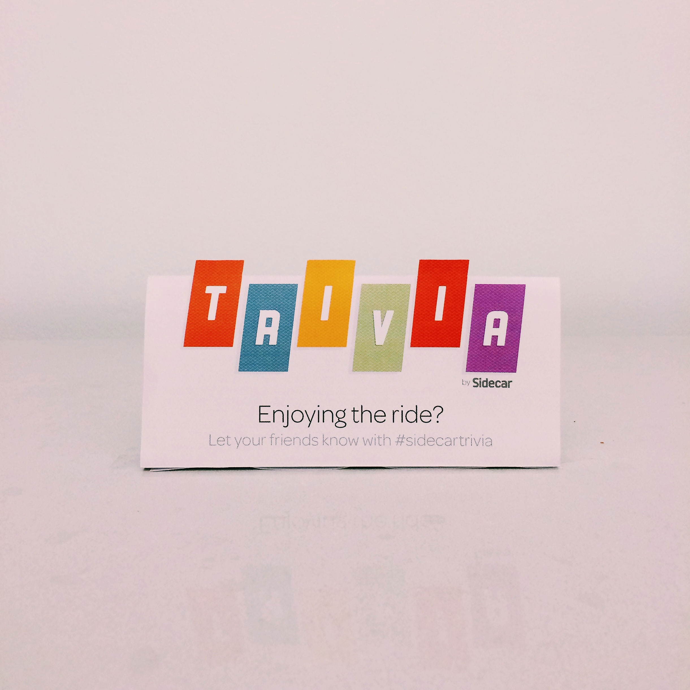
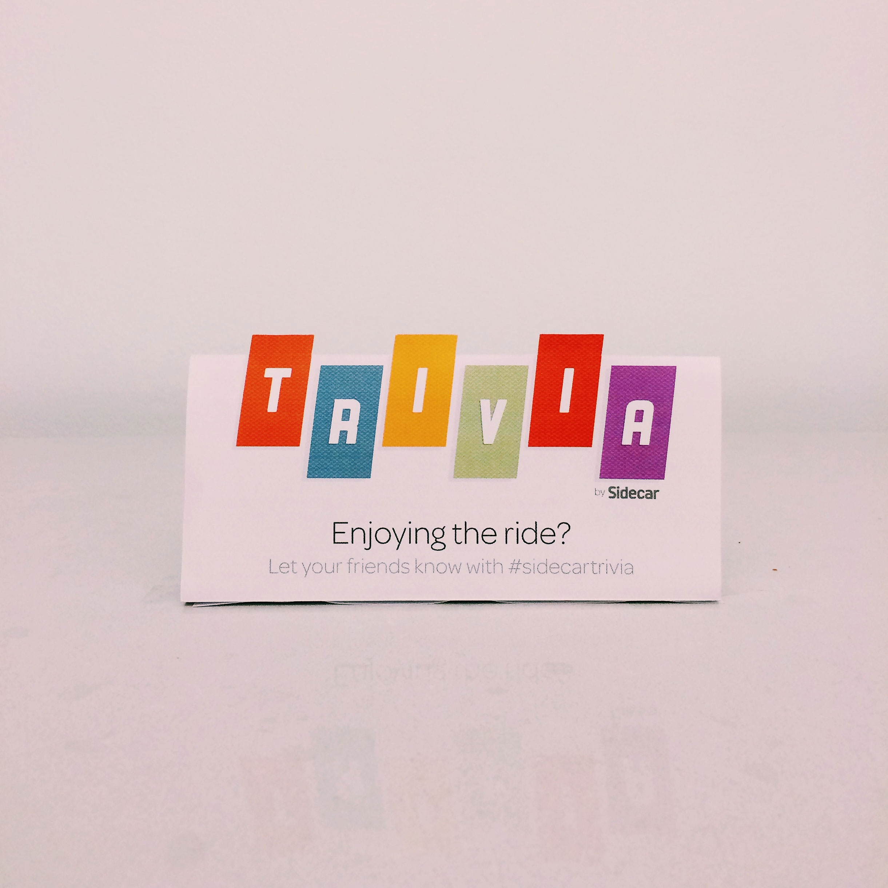
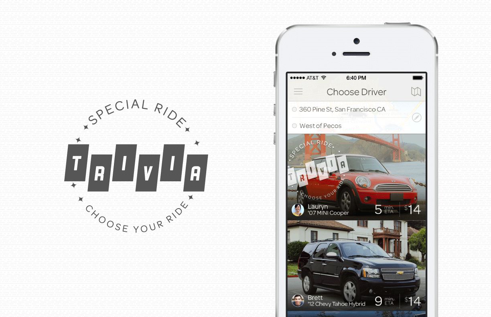

In March of 2014, we ran an awesome campaign to highlight our new marketplace feature in Sidecar. Since Rider's could finally choose a ride based on experience, not just how close it was, we wanted to create fun and enjoyable in-car experiences.
For Sidecar Trivia, we created a version of CashCab, where Rider's would answer trivia questions during their ride and win Sidecar credit. To advertise the event, I created an e-mail header, in-app badge, and an in-car ornament to let Riders know they were riding in a unique Sidecar.
 

I printed and folded about twenty of these to go on the dashboard of each Trivia car.
This was a stamp that was used to indicate a Trivia ride in the app. We made similar badges for other promotional rides later on.